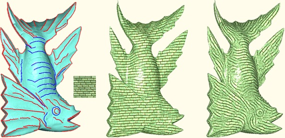

Feature-Aligned Shape Texturing
Kai Xu1,2,
Daniel Cohen-Or3,
Tao Ju4,
Ligang Liu5, Hao Zhang1, Shizhe Zhou5, Yueshan Xiong2
1Simon
Fraser Univ., 2National Univ. of Def. Tech., 3Tel-Aviv Univ.,
4Washington Univ. at St. Louis, 5Zhejiang Univ.
ACM Transactions
on Graphics (SIGGRAPH Asia 2009), 28(5)

Figure 1: Symmetry-driven
structural analysis of an irregular facade (a) results in a
hierarchical decomposition (b) into regular grids. Our analysis
introduces layering (b), going beyond flat segmentation via splits (c)
and allowing more compact and natural structural representations. The
resulting hierarchical model of facades enables applications such as
structural editing (d) and retargeting (e).
|
Abstract
|
The essence of a 3D shape can often be well captured by its salient feature curves. In this paper, we explore the use of salient curvesin synthesizing intuitive, shape-revealing textures on surfaces. Our texture synthesis is guided by two principles: matching the direction of the texture patterns to those of the salient curves, and aligning the prominent feature lines in the texture to the salient curves exactly. We have observed that textures synthesized by these principles not only fit naturally to the surface geometry, but also visually reveal, even reinforce, the shape’s essential characteristics. We call these feature-aligned shape texturing. Our technique is fully automatic, and introduces two novel technical components in vector field-guided texture synthesis: an algorithm that orients the salient curves on a surface for constrained vector field generation, and a feature-to-feature texture optimization.
|
|
|
Paper |
|
|
|
Slides |
|
|
|
Video |
|
|
|
| Images |
Figure
2: A gallery of feature-aligned texturing results. In each triplet, from left to right: our texturing result, textures synthesized by a
smooth vector field but without feature alignment, and model showing the extracted feature curves (blue: valley lines; red: ridge lines).
|
|
|
| Thanks |
We would first like to thank the anonymous reviewers for their
helpful comments. We are also grateful to Matthew Fisher for
sharing his code on vector field generation, to Renjie Chen for
providing his codes on texture synthesis, and to Xiaokun Wu for
his help with making the video. All the 3D models used in this
paper are from the AIM@SHAPE shape repository. This work is supported in part by grants from NSERC (No. 611370), NSF
(No. CCF-0702662), the Israeli Ministry of Science, the Israel Science
Foundation, the 973 National Key Basic Research Foundation
of China (No. 2009CB320801), the 863 Program of China (No.
2007AA01Z313), NSFC (No. 60773022), the China Scholarship
Council and the joint grant of the NSFC and Microsoft Research
Asia (No. 60776799).
|
|
|
| Code |
|
|
|
| Bibtex |
@article
{xu_siga09_fast,
title = {Feature-Aligned Shape Texturing},
author
= {Kai Xu and Daniel Cohne-Or and Tao Ju and Ligang Liu and Hao Zhang and Shizhe Zhou and Yueshan Xiong}
journal
= {ACM Transactions on Graphics (Proceedings SIGGRAPH Asia 2009)},
volume
= {28},
number
= {5},
pages
= {108:1--108:7},
year
= {2009}
}
|
 
|